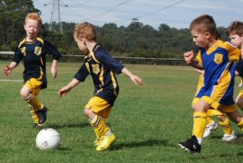

| Match Report - 24 April 2010 |
|
|
|
|
|
|
|
|
|
|
 Second week in & our under 6's kicked off with an early game at Magdala Road. Right
from the start you could see the confidence in these boys this week, it was really
amazing to watch.
Second week in & our under 6's kicked off with an early game at Magdala Road. Right
from the start you could see the confidence in these boys this week, it was really
amazing to watch.
All the boys were trying equally as hard as the other & it didn't take long to get
our 1st goal in, followed by 4 more over the whole game, thanks to our goal kickers
Nic, Hayden & Jack.

These goals were set up well with the help of a few breaks from the pack by Jayden
& a wonderful run up the field dribbling the ball the whole way by Cooper. Cooper
also hit the ground many a time by some serious collisions, you'd almost think it
was rugby we were watching, but he never failed to get back up on his feet & carry
on & this attitude to the game helped him earn Man of the Match, so well done Cooper,
keep up the good work.

It was really great to see the boys already playing off each other, passing the ball
& defending the goals when the time came for that. It is becoming obvious that for
most of them standing sideline for the last few years watching big brothers play has
really helped with their knowledge of the game so early into their first year.
Well done boys, keep up the fantastic work.
- Aleisha Cossettini
|
|
|
|
|
|
Our second outing for the season saw a tightly fought and entertaining match with
both teams playing with Great Spirit. Luke's passing & Lachlan's defending was
outstanding.
Jasmine and Luka tackled and won the ball with gusto whilst Brandon's and Ryan's
enthusiasm inspired the team and finally our player of the week Jayden's never-die
attitude with great support from the sidelines pulled the team together for an
amazing all round team performance.
- David Krizan
|
|
|
| U6 Red A |
|
North Ryde 5 - Saints United B 2
|
|
|
|
 This week's game was at a familiar setting for many of the team from last year, who
completed pre-season practise at Santa Rosa Park. Feeling very comfortable, our team
had a great start to the game with Bailey, Will and Jayden showing extreme keenness
to get in and tackle for the ball. Wonderful attacking moves from Archie and Alex
sent the ball along the sidelines at great speeds.
This week's game was at a familiar setting for many of the team from last year, who
completed pre-season practise at Santa Rosa Park. Feeling very comfortable, our team
had a great start to the game with Bailey, Will and Jayden showing extreme keenness
to get in and tackle for the ball. Wonderful attacking moves from Archie and Alex
sent the ball along the sidelines at great speeds.
We had a number of fantastic goal shooting attempts with Archie surprising himself
to score first for the team. Cameron took a wonderful intercept and in a very
controlled manner edged the ball very close to the goal but alas missed by the
smallest of margins. Only a short while later, being the trooper that he is Cameron
got straight back into play and collectively the team assisted to ensure another
goal was scored, although there was some confusion for a moment until it was
established it was made by Archie's foot.

The team were really chasing the ball hard this week. Lucas early in the second half
took a fantastic intercept and weaved the ball to the goal even managing to kick it
high into the air before it falling into the back of the net. Jayden was extremely
brave taking two excellent blocks to the body and continuing to play on. Alex scored
another impressive goal for the team and was ably supported by Bailey who showed
enthusiastic play in the middle of the field.
Our supporters were very excited throughout the match this week and loved every
minute of it. Even when we were heading in the wrong direction momentarily... they
were also very impressed by the hand signals by ALL the boys at throw-ins!
Player of the week was a close decision but Cameron received the award very proudly
for his monster effort at goal attempts this week.
- Reporter Leanne
|
|
|
| U6 White A |
|
North Ryde White A - North Ryde White B
|
|
|
|

The U6 White A's second game of the season was against another North Ryde U6 team.
The U6 White B's.
It was another beautiful day at Magdala Park. Both teams were well supported by
friends and family.
The game was hard fought. The commitment from both teams was outstanding, and
everyone tried their best.
You could already see the drills and techniques introduced at the weekly practices
starting to emerge.
The opposition team were younger and more inexperienced, some of their players
still in daycare, and although the match went against them it didn't curb their
enthusiasm. They hung in there till the last and never gave up!
Well deserving of the "Player of the Week" trophy was Maxwell Wilmot. Max scored
his first two goals of the year, and was one of the stand out performers! Well
done Max!!
Congratulations to both the White A's and White B's for a fun and enjoyable game.
- Steve Harris
|
|
|
| U7 Green |
|
North Ryde 3 - Holy Cross College B 1
|
|
|
|
So the U7 Greens season has begun! A 3 - 3 draw last week followed by a 3 - 1 win
this week and its been a whirlwind of tackles, fast feet, finding space and zigging
and zagging. Although some of this was done without the ball, and some of the boys
did seem intent on inventing a new sport during breaks in the game which seemed
like a cross between Soccer, WWF and the Haka, the skill levels and concentration
are definitely on the up.
Last week the call was "Tackles" with Thomas "The Rock" Bain winning man of the
match for some superb last ditch tackling. This week the call was for "Fast Feet"
and, my word, did we have some fast feet on the pitch! It was like the Riverdance
out there!
Finn was really fired up after one of the opposition called him a girl before the
game, and just missed out on a couple of goals; Annirudh made some great blocks and
some telling passes which were so good he would then stand back and study them for
a minute or two just to let it sink in how good they really were.
Will was popping up everywhere on the pitch like a great big mad pop-up thing while
Thomas was tackling like a crazy again. As for Evan - what can you say? Birthday boy
was unreal with his saving tackles and bringing the ball out of defence!
However for scoring a hat trick and using his face to stop a certain goal, the Man
of the Match had to go to Michael Flatley, sorry, Hamish Saba.
- Mags and Dave
|
|
|
|
|
|
"It was hard. It was also fun and good. We did good passing and running into free
space. Fletcher played well."
- Kate Kennedy
|
|
|
|
|
|
It was a beautiful warm autumn day. The players were gathered and the air was full
of nervous energy. The whistle blew and they were off. All our players were here
for the match.
North Ryde White A team started well and dominated for the first half with three
goals scored by Ibrahim, Isaak and Sam.
The second half saw even play with two goals scored by both teams.
During the game we saw some great attacking from Ibrahim and Isaak. We saw some
strong defending from Dominic and Leonardo.
Some great assisting was done by Emma, Jake and Sam. The best dribbling was done
by Ibrahim. The best passing was done by Sam and the most amazing goal save was
done by Isaak.
A great game was played by the Under 7 White A team today. Heaps of goals were
scored. Well done team.
Our player of the week award goes to Sam.
- Sally
|
|
|
|
|
|
Game number 2 and now we are a little wiser.
The team had a great start to the match and although All Saints were a few goals
ahead at half time, the team spirit was high and the attacking continue spirits
soared (both on and off the field) when Rishi and Kevin both scored a goal each
in the final minutes of the game.
Great team work by Emily, Luca, Cameron and Oliver for assisting in the conversions.
David was great umpiring and positioning the team and we are looking forward to
what next week has to bring.
- Sarah Robson
|
|
|
|
|
|
Our 2nd week saw us kick off at West Epping Oval, with one man down & one of our team
players not feeling well, we knew our boys would have to work hard with no reserves to
fall back on.
We started with Blake in Goals but it wasn't long before our sick boy Jay showed he
really wasn't well enough to run around, so we put him in goals for the whole game &
it was amazing as the rest of the team kept the ball down the other end nearly the
whole game, so that worked in Jay's favour.
The boys' defence was unbelievable, even though we watched the other team's players
swap every so often for a break & then send on a new fresh player, our boys held
strong, so well done boys.
Our 1st goal came from Aden, a very exciting moment, then the Redbacks also scored
to make it 1 - 1 at half time.
Luke A's & Jarrod's fancy footwork really is outstanding to watch & the way Luke M
just comes from nowhere to get to the ball everytime is incredible. Blake's
determination is always a pleasure to watch, especially once the other team scored
another goal we knew we didn't have long to at least make it even.
Our boys came thru with a fantastic last goal for the game, they pulled together &
in a great sprint for the ball Nathaniel made the most amazing kick for goals, the
ball flew up over everyones heads & went straight in. There was a huge roar from the
sideline as it was just in time to bring us up to 2-all, so well done Nathaniel.
The 1st 2 weeks have truly been a pleasure to watch, the boys are working wonderfully
together, they know each of their team mate's skills & strengths & are really playing
off each other, and not trying to do it all on their own.
Great team spirit & obviously great fitness too which was shown this week. Man of the
match went to Jay to say thanks for sticking with us even though you were not feeling
your best, so well done Jay.
- Aleisha Cossettini
|
|
|
|
|
|
The U9 Div 1's were up against Epping Eastwood on Saturday morning, a team who was
new in the division and a relatively unknown quantity. But I don't think many under
10's care too much about the form and history of their opposition. It's more a case
of: "The whistle has blown, there's a ball on the pitch, game on!"
The game started off at a fair enough pace as both teams stretched their legs about
the park, hunting for opportunities. And it wasn't long before they came, with
Shannon and Patrick scoring in relatively quick succession within the first ten
minutes of the match.
Epping Eastwood were awarded a penalty just outside the box towards the end of the
first half and made no mistake by slotting it high between the top post and Tim's
outstretched hands.
The score remained 2 - 1 in North Ryde's favour until the half-way mark. The contest
had been fairly even but you could sense that North Ryde were winding themselves up
for bigger and better things. Bigger and better is exactly what they got, and the
whistle at the start of the second half marked the beginning
of a merciless rort that saw North Ryde rip through the heart of the opposition,
leaving carnage and six unanswered goals in their wake. It was a beautiful thing
to watch, and arguably their finest 25 minutes of focused game-play and teamwork
to date.
In this mood, there was little that Epping Eastwood could do to stop the devastation
as North Ryde moved the ball around the park with skill and determination.
Opportunities were created with superb passing and footwork from one side of the
field to the other, and taken
advantage of as soon as the ball entered the danger zone. Goals came thick and
fast, and at regular intervals off the boots of Shannon, Adam, Jack, Jett and
Tom M, taking the final and full-time tally to 8 - 1.
A great performance from a team who give it their all from the first to the last,
and who are showing a lot of maturity on the field with sensible and effective
sequences of play that ultimately reflects positively on the scoreboard.
And
despite the skill and fitness they demonstrate to us each Saturday morning, they
are still just young boys who enjoy having a lot of fun together, and do it with
so much energy that they make all of us watching from the sideline wish we were
young again.

Top game again Div 1's, making it three out of three. Keep it up!
- Mark Howard
|
|
|
|
|
|
Saturday morning was heralded by the blaring of alarm clocks as the U10/4 had the
early game. Luckily we only had a short trek to Epping and we were able to get the
game finished prior to the real heat of the day.
This week also saw us field a full complement of players so were able to use our
interchanges to maximum benefit - this is particularly important as the team still
adapts to playing on the big field. The team started off a little tentatively but
were soon able to find their rhythm and were applying tremendous pressure on the
opposing side.
Some excellent support work and crisp passing from the mid-field through to the
forwards saw North Ryde take an early 1 - 0 lead thanks to a great effort by Jack.
With the first goal under our belts, things really started to open up and before
we knew it 3 more goals were in - another one to Jack and two super toe-pokes by
our forward, Lachlan and defender, Thomas. Epping Eastwood were able to make a few
fast breaks but tenacious defending by Andrhea, Harrison and Jordan, and pressure
saves by our goalkeeper Alvin saw us go to the break 4 - 0 up.
The second half was tighter with stronger defending from Epping Eastwood and a
couple of unlucky misses by Laurence and Peter. The team learnt a valuable lesson
about 'playing to the whistle' when a ball that looked like it went out on our goal
line was 'hand-balled' as we attempted a goal kick restart. The referee had not
indicated that the ball was out. Epping Eastwood was able to convert the penalty
kick, despite a great effort by Alvin.
The win was sealed with another goal to Jack - a hat-trick for the day.
Overall, a great effort by the team in notching their first win for the season and
in such emphatic style.
- Adam Ricciardone
|
|
|
|
|
|
This week we played at Hayes Park against Hills Hawks.
It was a very exciting game where we scored the first goal in the first few seconds
of the game.
We were going goal for goal, until the last few seconds of the game when Hills Hawks
scored a lucky goal against the run of play to win 3-2. Our team played like a
champion team as usual, they worked together, passed the ball to each other, made
some fantastic line breaks,and defended well.
Everyone gave 100% and it was a fantastic game of soccer to watch. You should be
very proud of yourselves as you all showed great skill and sportsmanship.
Well done to everyone.
- Kim Harte
|
|
|
|
|
|
A tough day at the office for the 12/6's after negotiating the long haul to Kenthurst.
Despite only having 10 lads, the 12/6's put on a brave display taking up the challenge
of Kenthurst and really the end score was more a reflection of tired legs in the second
half than any lack of commitment as the teams were pretty evenly matched for the better
part of the game.
North Ryde were unlucky to go into half time 1-0 down after a number of shots on goal
failed to yield a result. After a drink and time to catch their breath, the lads came
out in the second half firing and Joel bagged a great equaliser 5 minutes into the
second half.
Despite this, the lift in spirits was short lived as Kenthurst, aided by an army of
reserves, then went about putting 4 goals away in quick succession. There are clear
signs that the team is starting to click with some good combinations starting to
appear.
Jackson, aided by Dom in the second half worked well up front. The backs led by Lucas
in centre and Kevin and Karan showed real commitment in closing down opposition raids.
And the halves comprising Connor, Alex and Andrew are emerging as committed players
willing to have a go in both attack and defence.
The stand out performance for the day was Will who played as a defensive midfielder
expertly filling the space between the backs and midfielders. Will chased down
everything that came near him and was a deserving player of the week.
Special thanks to Joel who stepped in from the Under 11's to help with numbers.
- David Hoy
|
|
|
|
|
|
Another tough day at the office with the team getting off to another slow start and
allowing Roselea to skip to a 7 - 0 lead at halftime. Time and again our defence was
found out by through balls and the opposition's superior pace out wide.
To their immense credit the team rallied in the second half following a challenging
half-time speech from the coach. During the second half the team showed a greater
degree of commitment and courage holding the opposition to a 2 - 1 scoreline in the
second half.
Our first goal of the season went to Kenny R. Well done Kenny!
Hopefully next Saturday we can put together 2 strong halves and be competitive.
- Bill Greer (Manager)
|